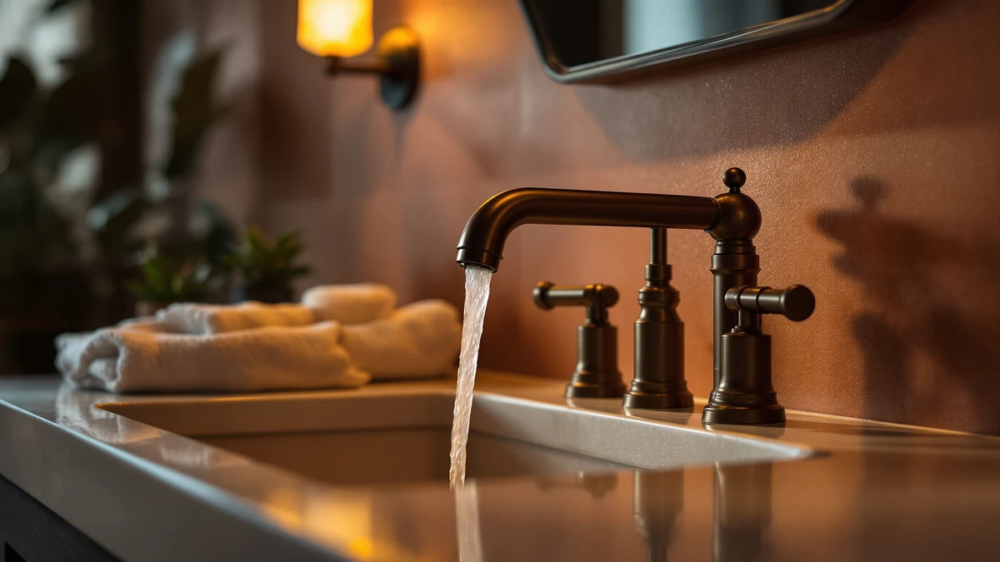

How to Clean Bathroom Sink Faucets: Complete Guide (2026)
Prices and picks verified as of October 2026. Independent, reader-supported reviews.


Things to Know Before You Buy
- Most of the grime on a faucet collects at the base and inside the aerator, not on the visible spout, so a quick wipe of the spout alone leaves the job half done.
- A vinegar soak works on chrome, stainless, and standard nickel, but skip it on matte black, oil-rubbed bronze, and brushed gold, where the acid can dull the coating.
- A daily 30-second wipe-down after the last use of the night keeps mineral spots from hardening into the kind of buildup that later needs a full soak to remove.
- Homes on hard water need this routine roughly twice as often as homes on soft or filtered water.
- Abrasive sponges and bleach-based cleaners scratch or discolor most faucet finishes; a soft cloth and a soft-bristle toothbrush handle nearly everything here.
Knowing how to clean bathroom sink faucets properly stops hard water spots, dried toothpaste, and soap scum from dulling a finish that is supposed to last for years. Most faucets only need a few household staples and about half an hour, not a trip to the store for a specialty cleaner.
This guide walks through five steps that work on nearly any faucet finish, starting with a basic rinse and ending with the aerator and the polish that brings back the shine. We researched which cleaning methods are safe for which finishes and checked verified owner reviews on faucets that hold up best to repeated cleaning, so you can match the method below to the fixture you actually have. Follow the steps in order, and set aside the finish warning in step two if your faucet is matte black, bronze, or gold-toned.
What You'll Need
- Supplies: white distilled vinegar, baking soda, and a microfiber cloth for cleaning and drying the faucet streak-free
- Tools: a soft-bristle toothbrush and a plastic sandwich bag with a rubber band for cleaning the aerator
Step 1: Clear the counter and rinse the faucet
Move toothbrush holders, soap dispensers, and anything else sitting near the base out of the way so you can see and reach every surface of the faucet. Wipe away loose dust and dried toothpaste splatter with a dry cloth first, then rinse the whole fixture with warm water.
This first pass matters more than it looks. Cleaning bathroom sink faucets works faster when the surface grime is gone before you bring out vinegar or baking soda, since a layer of dust and soap scum sits on top of the cleaner instead of letting it reach the mineral buildup underneath.
Step 2: Soak mineral buildup in vinegar
Fill a plastic sandwich bag about a third full with white distilled vinegar, slip it over the faucet head or around the base to clean away chalky white deposits, and secure it with a rubber band so the vinegar stays in contact with the metal. Let it sit for 15 to 30 minutes.
That soak time is doing the real work in this process. Hard water deposits that built up over weeks or months need the vinegar's acid to loosen their grip, and skipping straight to scrubbing spreads the minerals around instead of breaking them down. Homes with especially hard water sometimes need a second round once the first bag comes off.
Skip this step on matte black, oil-rubbed bronze, and PVD-coated faucets. Vinegar can dull or strip those finishes, so a warm water and mild dish soap mix is the safer choice there.
Step 3: Scrub stubborn spots with a baking soda paste
Mix baking soda with a few drops of water until it forms a thick paste, then use it to clean any spots the vinegar soak did not fully clear, usually around the handle base or in textured grooves. Work the paste in with a soft-bristle toothbrush, scrubbing in small circles rather than dragging the brush back and forth.
Baking soda's mild abrasion lifts crusted mineral deposits without scratching a faucet's chrome, nickel, or stainless finish the way steel wool or an abrasive sponge would. Rinse the brush often as you go, since a paste-loaded brush smears buildup around instead of pulling it free.
Step 4: Clean and rinse the aerator
Unscrew the aerator, the small mesh screen at the tip of the spout, by hand or with pliers wrapped in a cloth to protect the finish. Drop it into a small bowl of vinegar deep enough to cover it, and let it soak for about 15 minutes while you finish cleaning the rest of the faucet.
The aerator collects more mineral buildup than any other part of a bathroom sink faucet, since water passes through its mesh screen every time you turn the tap on. A clogged aerator is also the most common reason water starts spraying unevenly or losing pressure, so this step fixes more than the look of the fixture. Rinse it under running water, flick out any remaining flecks with an old toothbrush, and screw it back on hand-tight.
Step 5: Dry and polish the finish
Rinse the entire faucet one more time to wash away any leftover vinegar or baking soda residue, then dry it completely with a microfiber cloth, buffing in the direction of the metal's grain. A thorough dry matters as much as the scrubbing, since standing water left on the surface is exactly what starts the mineral buildup cycle over again.
Finish with a light coat of car wax or a dedicated metal polish if you want an extra layer of protection between cleanings. It is not required, but it slows down how fast new water spots form and keeps the faucet looking freshly cleaned for longer.
Common Mistakes to Avoid
The most common mistake is leaving vinegar on the faucet far longer than the recommended soak. Undiluted vinegar sitting for hours instead of 15 to 30 minutes can etch the protective coating on chrome and nickel, leaving a dull patch no amount of polishing fixes. Set a timer instead of guessing.
A close second is reaching for vinegar on every finish without checking first. Matte black, oil-rubbed bronze, and PVD-coated faucets react poorly to acid, and some discolor after a single treatment. If you are not sure what finish you have, check the manufacturer's care instructions before cleaning bathroom sink faucets with anything acidic.
Skip steel wool, scouring pads, and anything marketed for oven or grill cleaning. These leave micro-scratches that trap dirt and make the next round of buildup worse, even on finishes that tolerate vinegar well. A soft cloth or toothbrush is strong enough for the job.
Finally, do not ignore the aerator. Owners who only wipe the visible spout often end up with uneven spray patterns within a few months, then assume the faucet itself has failed when the real problem is a clogged screen that a 15-minute soak would have solved. And do not skip the final rinse and dry. Vinegar residue left to dry on its own can leave a faint film, undoing some of the shine the cleaning was supposed to restore.
Our Top Picks
If regular cleaning cannot keep a faucet's finish looking right anymore, or the pitting has gone past what vinegar and baking soda can fix, these three faucets are worth a look based on verified owner reviews and current pricing.

Editor’s Pick
WOWOW Bathroom Faucet 1 Handle
Owners report the single-handle design and sealed finish on this WOWOW faucet resist water spots between cleanings better than older plated fixtures, which makes the routine above faster to keep up with.
$37.99
Check Price on Amazon
Best Value
WOWOW Gold Bathroom Faucet 3
This gold-finish WOWOW faucet has a brushed coating that reviewers consistently note wipes clean with a soft cloth alone, making it a solid option if you want to skip the vinegar step on most days.
$57.99
Check Price on Amazon
Premium Choice
BWE Brushed Gold Bathroom Faucet
Solid brass construction gives this BWE faucet more weight behind its brushed gold finish, and owners say it holds up to regular vinegar soaks without the coating wearing thin over time.
$38.49
Check Price on AmazonHow often should you clean a bathroom sink faucet?
Wipe it down after each use so splatter doesn't dry into spots, and run a full vinegar soak every two weeks if your home has hard water or once a month if the water is soft.
Can you use vinegar on every faucet finish?
No.
Frequently Asked Questions
How often should you clean a bathroom sink faucet?
Can you use vinegar on every faucet finish?
What removes hard water stains from a faucet fast?
Why does the base of the faucet get dirtier than the spout?
What should you avoid when cleaning a bathroom sink faucet?
Verdict
Learning how to clean bathroom sink faucets comes down to five steps you can repeat in about 30 minutes: rinse, soak mineral buildup in vinegar, scrub with baking soda where needed, clear the aerator, and dry the finish completely. Stick to that order and the fixture above your sink stays close to new-looking for years instead of slowly crusting over with hard water spots.
If a faucet is too far gone for cleaning to fix, a WOWOW faucet with a sealed, spot-resistant finish is a practical upgrade that makes this whole routine easier to keep up with.